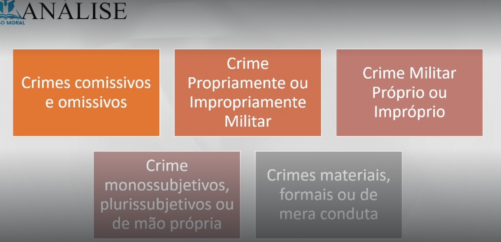
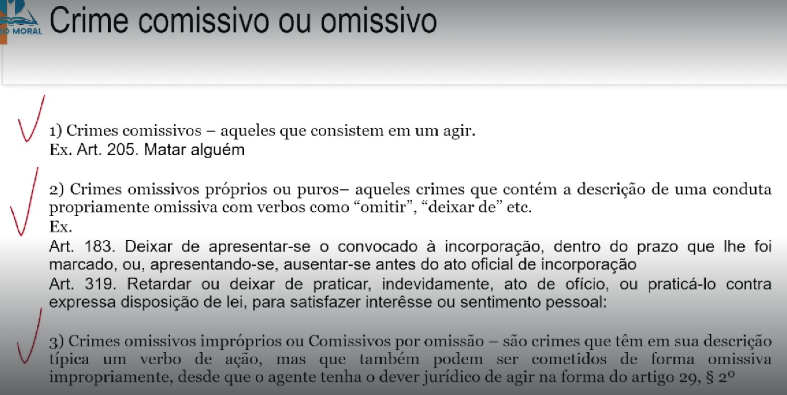
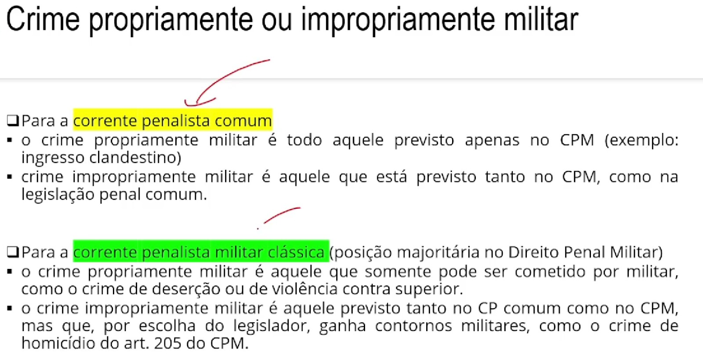
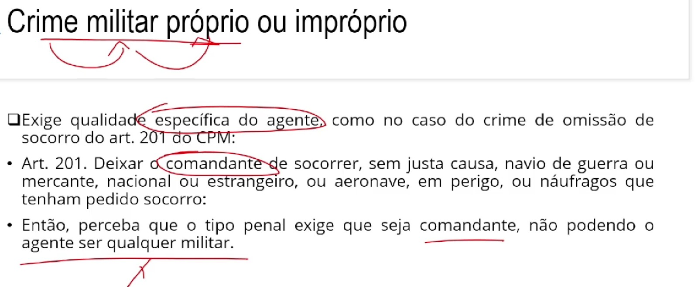
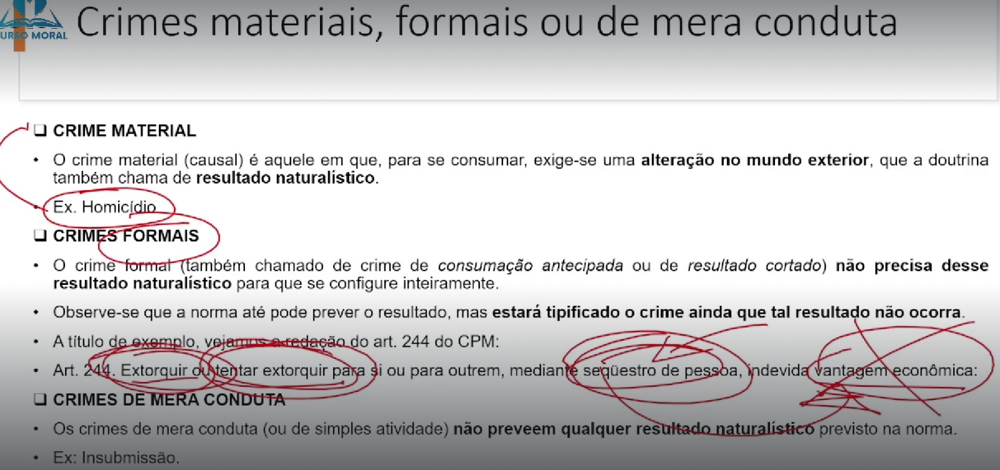
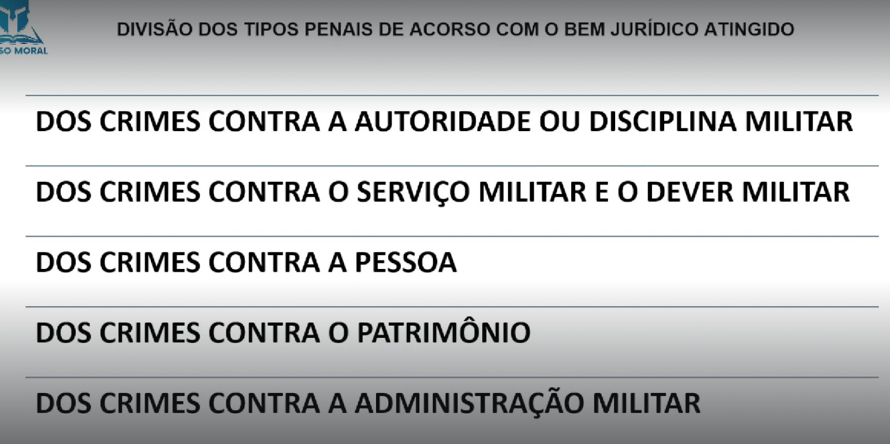
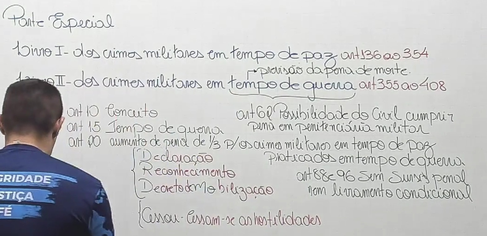

⚖ TÍTULO I - DA APLICAÇÃO DA LEI PENAL MILITAR (Art. 1º ao 28)
⚖ TÍTULO II - DO CRIME (Art. 29 ao 47)
⚖ TÍTULO III - DA IMPUTABILIDADE PENAL (Art. 48 ao 52)
⚖ TÍTULO IV - DO CONCURSO DE AGENTES (Art. 53 e 54)
⚖ TÍTULO V - DAS PENAS (Art. 55 ao 109)
⚖ TÍTULO VI - DAS MEDIDAS DE SEGURANÇA (Art. 110 e 120)
⚖ TÍTULO VII - DA AÇÃO PENAL (Art. 110 e 120)
⚖ TÍTULO VIII - DA EXTINÇÃO DA PUNIBILIDADE (Art. 123 e 135)
PARTE ESPECIAL - LIVRO I
DOS CRIMES MILITARES EM TEMPO DE PAZ
⚖ TÍTULO II
DOS CRIMES CONTRA A AUTORIDADE OU DISCIPLINA MILITAR
CAPÍTULO I - DO MOTIM E DA REVOLTA (Art. 149 e 153)
TÍTULO I
DOS CRIMES CONTRA A SEGURANÇA EXTERNA DO PAÍS (Art. 136 e 148)
🎥 29. Dos Crimes Militares em Tempos de Paz - Parte 1

📌 Crime comissivo: é aquele que é praticado por um comportamento positivo do agente, isto é, um fazer. São comissivos os crimes de furto e de infanticídio por exemplo.
📌 Crime omissivo: é aquele que é praticado por meio de um comportamento negativo, uma abstenção, um não fazer, omissão. (Deixar de Fazer)
A omissão é relevante como causa quando o omitente devia e podia agir para evitaro resultado. O dever de agir incumbe a:
📍 quem tenha por lei obrigação de cuidado, proteção ou vigilância;
📍 a quem, de outra forma, assumiu a responsabilidade de impedir o resultado;
📍 e a quem, com seu comportamento anterior, criou o risco de sua superveniência.
(Art. 29º, §2º)

📍 Crime propriamente Militar: é aquele que somente pode ser cometido por militar, como o crime de deserção ou violência contra superior
📍 Crime impropriamente militar: é aquele previsto tanto n oCP comum como no CPM, mas que, por escolha do legislador, ganha contornos militares, como o crime de homicídio do Art. 205 do CPM.
📍 Crime Militar por extensão: é aquele não previsto no CPM, mais previstos em outros CP.

📍 Crime Militar Próprio: é aquele que exige uma qualidade específica do agente. Ex. Art 201
📍 Crime Militar Impróprio:

📍 Crime monossubjetivos: Também conhecidos como unilaterais, unissubjetivos, ou de concurso eventual, são aqueles que podem ser praticados por mais de uma pessoa, mas que, em regra, são praticados por uma pessoa só. Ex: Homicídio
📍 Crime plurissubjetivos: Também chamados de plurilaterais ou de concurso necessário, são aqueles necessariamente praticados por mais de uma pessoa. Ex: Motim
📍 Crime de mão própria: é aquele que só pode ser cometido pelo agente, diretamente. Só própria pessoa pode cometer, não admite intermediação. Por não suportar interposta pessoa, não cabe coautoria. Cuidado, cabe participação aqui. Ex: Despojamento desprezível.
📍 Crime Material: O crime material (causal) é aquele em que, para se consumar, exige-se uma alteração no mundo exterior, que a doutrina também chama de resultado naturalistico. Ex: Homicídio
📍 Crimes Formais: Ocrime formal (também chamado de crime de consumação antecipada ou de resultado cortado) não precisa desse resultado naturalístico para que se configure inteiramente. Observe-se que a norma até pode prever o resultado, mas estará tipificado o crime ainda que tal resultado não ocorra. A título de exemplo, vejamos a redação do Art. 244 do CPM. Art. 244. Extorquir ou tentar extorquir para si ou para outrem, mediante sequestro de pessoa, indevida vantagem econômica:
📍 Crimes de Mera Conduta: Os crimes de mera conduta (ou de simples atividade) não preveem resultado naturalísctico previsto na norma. Ex: Insubmissão.


